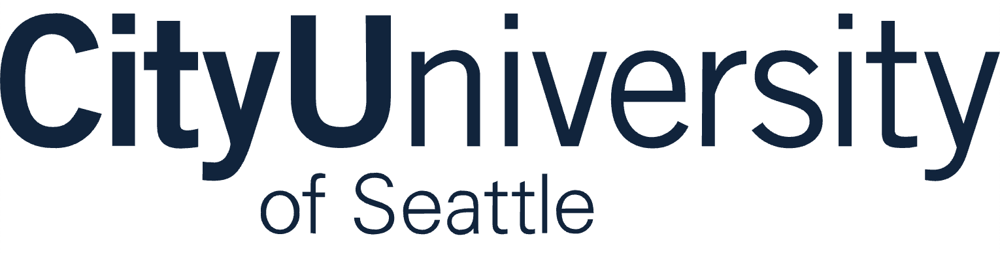

CityUX Open EcosystemCityUX is City University of Seattle's open ecosystem — a staged path that meets people where they already are (YouTube, GitHub, LinkedIn, a Discord invite) and moves them, at their own pace, toward a credential, a program, or a partnership. This is the map: four stages, one continuous funnel, and the six real journeys that flow through it.
"TOFU / MOFU / BOFU" are marketing shorthand for Top, Middle, and Bottom of Funnel — how close someone is to a decision. The funnel narrows on purpose: broad, free discovery at the top; a smaller, more committed group converting at the bottom.
YouTube · Gated ebooks / CityU Guides · LinkedIn · practitioner content — free, public, no strings. First contact with a name they can trust.
GitHub labs · Open edX self-paced pilots — CityU's micro-credential / workshop layer. They do real work and feel a first win.
Workshops · Seminars · Community Hub (Discord) — live, human touchpoints. They join a community and raise their hand.
Program registration · micro-credential · partnership conversation — the formal CityU relationship the whole funnel was building toward.
The widest net. Free public content — no account, no commitment. Most people you'll ever reach live here.
Curiosity turns into action. They try a lab or a self-paced course and get a taste of the real thing.
Warm and human. Live sessions and community — where trust and intent become visible.
The decision. Enrollment, a recognized credential, or a partnership — and it doesn't mean the same thing for everyone.
You don't ask a stranger to enroll in a degree. You offer a free video, then a free lab, then a friendly workshop — each step a smaller "yes" than the last one earned. By the time enrollment or a partnership comes up, they already know you, and they've already succeeded with you once.
The default path the ecosystem is built around — the most predictable journey to design nurture around. Watches a video, tries a lab, joins the community, enrolls.
The one journey where you get a real name and email at the very first touch — the gated form captures identity immediately, unlike YouTube's anonymous reach. Live today: CityU Guides — three gated guides published, feeding a marketing sheet. An "I am a…" field is meant to branch students from potential partners.
Skips discovery entirely — the organizational partnership is the entry point. "Conversion" here is a workplace-recognized credential, not a degree. This is the model where an employer or agency pays CityU to design and deliver a custom course for its people.
Highest-value outcome (full degree enrollment) but the longest cycle. Real example: the iKW Summer Program — Korean students traveled to Seattle for an in-person cohort, with coursework on the same Open edX instance used across the ecosystem. Here, MOFU and BOFU compress into one physical visit.
Enters "out of order" — proof the funnel isn't strictly linear. Live today: the CityUX Discord runs an #ebooks channel and a #courses channel that route members back into the earlier stages — the backfill is real, not hypothetical.
A different axis: this is about who published the content — an individual instructor building trust under their own name. If their content routes into Open edX, it folds into the Self-Directed Learner path; if not, it's a faster, compressed route straight to a course. CityU trains faculty to become these practitioner-publishers.
Three of these six journeys — the ebook lead, the employer-sponsored professional, and the international student — are partnership-driven. They don't start with an anonymous video view; they start with an organization or a relationship. A Corporate & Community Partnership Hub is the front door for exactly those journeys: it's how employers, agencies, and partner institutions enter the funnel and route their people into CityU's courses and credentials.
City University of Seattle · CityUX Open Ecosystem. Prepared as a walkthrough of the learner-journey model. Items marked live today are running pilots, not proposals. Full technical detail — touchpoint integrations, data pipeline, and prioritization — lives in the CityUX Open Ecosystem Execution Plan.